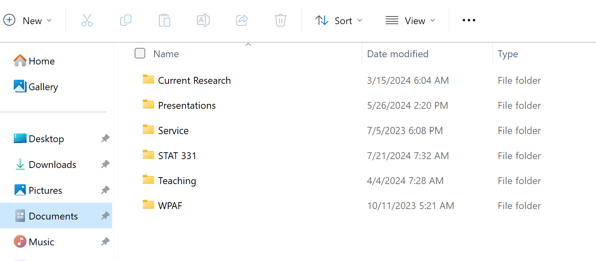
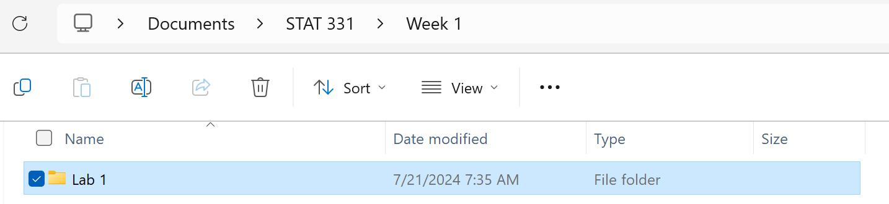
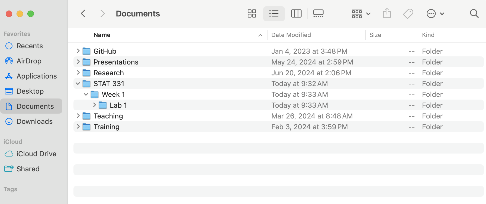

Week 2: Reproducible Analyses with Quarto
The theme of this lesson is good management of your files and data. In part two of this week’s coursework you will learn how to identify folders and paths, and create Quarto documents.
üìñ Readings: 45 minutes
üíª Activities: 5-10 min
1 Principles of Reproducibility
1.1 File Management
As boring as it sounds, file management is arguably one of the most important skills a data scientist should have. The reproducibility of a project depends just as much on the way in which the project was stored as the computing tools used. While using R and Quarto make an important step in creating a reproducible analysis, there are other pieces that are arguably just as important—such as file management.
Believe it or not, your computer has multiple locations** where files can be stored. There has been a bit of a generational shift as computers have evolved: the “file system” metaphor itself is outdated because no one uses physical files anymore.
[This article]((https://futurism.com/the-byte/gen-z-kids-file-systems) makes the argument that with modern search capabilities, most people use their computers as a laundry hamper instead of as a nice, organized filing cabinet. However, the laundry hamper approach doesn’t play nicely with working in R and creating Quarto documents.
In this class, we will store files according to the Project TIER protocol. More specifically, you will have:
- a “Stat 210” folder in your Documents folder, containing all your materials associated with STAT 210
- a sub-folder for each week (e.g., Week 1, Week 2)
- separate folders within each week for each assignment (e.g., Practice Activity, Lab)
- a separate R Studio Project (and GitHub repository) associated with each assignment
For example, if you come to my office for help on your lab assignment for Week 2, I would expect your files to look like this:

This computer has six total folders in my Documents, one of which is a folder named “STAT 311.” You should have one that is called “STAT 210” or something similar.

Inside my STAT course folder is a sub-folder named “Week 1,” which also has a sub-folder (a sub-sub-folder) named “Lab 1.” You can tell what folders Lab 1 lives inside based on the information included at the top of the screen. This is called a “file path,” which tells your computer where a folder / file lives on the computer.
On a PC, every file lives on the C Drive, so the “full path” to get to my Lab 1 folder would be:
C:/Users/jcanner/Documents/STAT 210/Week 1/Lab 1

On this Mac, there are six total folders in my Documents, one of which is a folder named “STAT 331.” Inside this folder is a sub-folder named “Week 1,” which also has a sub-folder (a sub-sub-folder) named “Lab 1.”
On a Mac, every file lives on the hard drive (it doesn’t have letters like a PC), so the “full path” to get to my Lab 1 folder on a Mac would be:
/Users/jcanner/Documents/STAT 210/Week 1/Lab 1
1.2 ✅ Check-in: STAT 210 Folder
Check that your class directory is set up with:
- the location of your Stat 210 folder
- a Week 1 sub-folder
- a Lab 1 sub-sub-folder (inside the Week 1 folder)
Your STAT 210 folder cannot be in a folder stored on GoogleDrive, OneDrive, or iCloud! Storing your folder in this location will cause your code to periodically not run and I cannot help you fix it.
2 Reproducible Documents
Over the last ten years, science has experienced a “reproducibility” crisis. Meaning, a substantial portion of scientific findings were unable to be recreated because people didn’t sufficiently document the processes they used. As such, a foundational aspect of scientific research is using tools which allow others to reproduce your findings.
Enter Quarto—a dynamic document that allows us to interweave R code and written text in the same document. Gone are the days of copying and pasting the results of your R code into a Word document—breaking the connection between your analysis and your report. Quarto is here to save the day!
2.1 Downloading Quarto
The software associated with Quarto is automatically downloaded with the newest versions of RStudio. So, if you are using the most up to date version of RStudio (as instructed in Part 1 of this week’s coursework), you should already have Quarto installed on your computer. But, let’s test it out.
To ensure you have Quarto installed, carry out the following process:
- Open RStudio
- Click on “File” (in the upper navigation bar)
- Select “New File” (in the dropdown options)
- Select “Quarto Document…” (in the dropdown option)

If you have Quarto installed, you should be prompted with the following menu:
![A screenshot of the menu that should appear when you carry out the process described above. The menu is a square box with a title reading 'New Quarto Document'. On the left hand side of the box, the user can select what type of Quarto product they wish to create (Document, Presentation, or Interactive). On the right hand side, the user can control various aspects of their document, including the title, the author, the type of rendered document (HTML, PDF, or Word). At the bottom there are options to 'Create an Empty Document' (a barebones document), to 'Create' a document (with the user specified options), or 'Cancel'.](images/week-1/new-quarto-doc.png)
If, instead, you receive a message saying Quarto is not installed on your computer, you need to download Quarto: https://quarto.org/docs/download/
2.2 Introduction to Quarto
üìñ Required Reading: Intro to Quarto
HTML Documents
We will exclusively use HTML documents in this course. If you are interested in learning more about formatting options for Quarto HTML documents, I would recommend checking out:
2.3 ✅ Check-in: Quarto Documents
Question 1: What are the options at the top of a Quarto document (between the --- and --- symbols) called?
- XML
- YAML
- REML
- TOML
Question 2: What symbols create an R code chunk?
```{r}```{r}`{r}`
Question 3: What symbol defines a heading?
$_*#
Question 4: When working in a Quarto document, the [visual / source] editor will display the raw Quarto document, whereas the [visual / source] will display the document as it will appear when it is rendered.
Question 5: To produce an HTML report from your Quarto document, you need to click the ____ button.
Visual
Render
Render on Save
Save